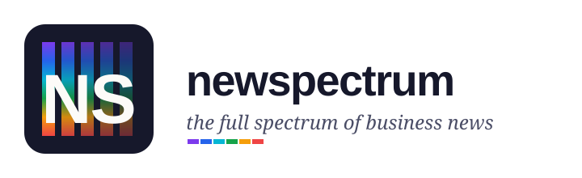
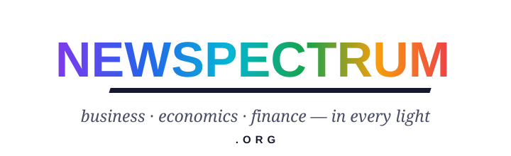
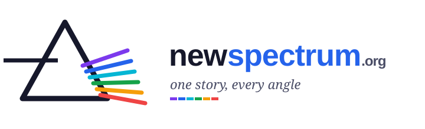
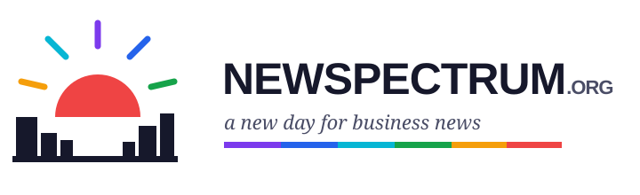
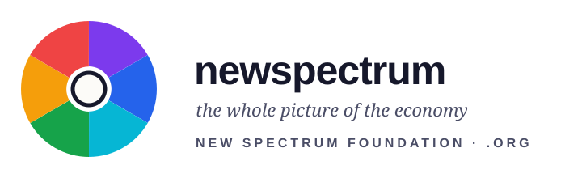

Five logo directions for New Spectrum Foundation LLC. Common idea: a six-color spectrum as the brand signature — each color is also tied to one menu section of the site (Enterprises — violet, Banks — blue, Management — cyan, B2C — green, Economics — amber, Global — red).

Option 1 — Letter play: “NS” monogramSpectrum stripes on a dark indigo tile; compact, works well as a favicon and app icon.

Option 2 — Letter play: spectrum wordmarkThe whole name painted with the spectrum gradient; maximum brand color, no icon.

Option 3 — Concept: the prismA beam of light becomes six colors — “one story, every angle”: the editorial promise of the site.

Option 4 — Abstract: spectrum sunrise over a business skyline“A new day for business news”; warm, optimistic, distinctly editorial.

Option 5 — Other: spectrum apertureAn iris of six segments — “the whole picture of the economy”; strongest as a small icon.
Internal review page — not indexed. After you pick an option, it becomes the site logo (header, footer, favicon set), and the site skeleton is finished for your approval.